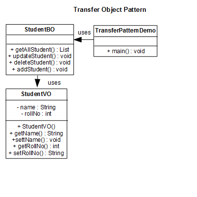

A Code Journal for
Hub Pages
View the Code Journal on GitHub
Repositories and latest Contribution Activity
A Code Journal for
Hub Pages
View the Code Journal on GitHub
Last updated on January 2nd, 2019
Design patterns represent the best practices used by experienced object-oriented software developers. Design patterns are solutions to general problems that software developers faced during software development. These solutions were obtained by trial and error by numerous software developers over quite a substantial period of time.
In 1994, four authors Erich Gamma, Richard Helm, Ralph Johnson and John Vlissides published a book titled Design Patterns - Elements of Reusable Object-Oriented Software which initiated the concept of Design Pattern in Software development.
These authors are collectively known as Gang of Four (GOF). According to these authors design patterns are primarily based on the following principles of object orientated design.
Design Patterns have two main usages in software development.
Design patterns provide a standard terminology and are specific to particular scenario. For example, a singleton design pattern signifies use of single object so all developers familiar with single design pattern will make use of single object and they can tell each other that program is following a singleton pattern.
Design patterns have been evolved over a long period of time and they provide best solutions to certain problems faced during software development. Learning these patterns helps unexperienced developers to learn software design in an easy and faster way.
As per the design pattern reference book Design Patterns - Elements of Reusable Object-Oriented Software , there are 33 design patterns which can be classified in four categories: Creational, Structural and Behavioral patterns. We'll also discuss another category of design pattern: J2EE design patterns.
Factory pattern is one of the most used design patterns in Java. This type of design pattern comes under creational pattern as this pattern provides one of the best ways to create an object.
In Factory pattern, we create object without exposing the creation logic to the client and refer to newly created object using a common interface.
We're going to create a Shape interface and concrete classes implementing the Shape interface. A factory class ShapeFactory is defined as a next step.
FactoryPattern, our demo class will use ShapeFactory to get a Shape object. It will pass information (CIRCLE / RECTANGLE / SQUARE) to ShapeFactory to get the type of object it needs.
Step 1
Create an interface.
public interface Shape {
void draw();
}
Step 2
Create concrete classes implementing the same interface.
public class Rectangle implements Shape {
@Override
public void draw() {
System.out.println("Inside Rectangle::draw() method.");
}
}
See
Square.java
public class Square implements Shape {
@Override
public void draw() {
System.out.println("Inside Square::draw() method.");
}
}
See
Circle.java
public class Circle implements Shape {
@Override
public void draw() {
System.out.println("Inside Circle::draw() method.");
}
}
Step 3
Create a Factory to generate object of concrete class based on given
information.
public class ShapeFactory {
//use getShape method to get object of type shape
public Shape getShape(String shapeType){
if(shapeType == null){
return null;
}
if(shapeType.equalsIgnoreCase("CIRCLE")){
return new Circle();
} else if(shapeType.equalsIgnoreCase("RECTANGLE")){
return new Rectangle();
} else if(shapeType.equalsIgnoreCase("SQUARE")){
return new Square();
}
return null;
}
}
Step 4
Use the Factory to get object of concrete class by passing an
information such as type.
public class FactoryPattern {
public static void main(String[] args) {
ShapeFactory shapeFactory = new ShapeFactory();
//get an object of Circle and call its draw method.
Shape shape1 = shapeFactory.getShape("CIRCLE");
//call draw method of Circle
shape1.draw();
//get an object of Rectangle and call its draw method.
Shape shape2 = shapeFactory.getShape("RECTANGLE");
//call draw method of Rectangle
shape2.draw();
//get an object of Square and call its draw method.
Shape shape3 = shapeFactory.getShape("SQUARE");
//call draw method of circle
shape3.draw();
}
}
Step 5
Verify the output.
Inside Circle::draw() method.
Inside Rectangle::draw() method.
Inside Square::draw() method.
Abstract Factory patterns work around a super-factory which creates other factories. This factory is also called as factory of factories. This type of design pattern comes under creational pattern as this pattern provides one of the best ways to create an object.
In Abstract Factory pattern an interface is responsible for creating a factory of related objects without explicitly specifying their classes. Each generated factory can give the objects as per the Factory pattern.
We are going to create a Shape and Color interfaces and concrete classes implementing these interfaces. We create an abstract factory class AbstractFactory as next step. Factory classes ShapeFactory and ColorFactory are defined where each factory extends AbstractFactory. A factory creator/generator class FactoryProducer is created.
AbstractFactoryPattern, our demo class uses FactoryProducer to get a AbstractFactory object. It will pass information (CIRCLE / RECTANGLE / SQUARE for Shape) to AbstractFactory to get the type of object it needs. It also passes information (RED / GREEN / BLUE for Color) to AbstractFactory to get the type of object it needs.
Step 1
Create an interface for Shapes.
public interface Shape {
void draw();
}
Step 2
Create concrete classes implementing the same interface.
public class Rectangle implements Shape {
@Override
public void draw() {
System.out.println("Inside Rectangle::draw() method.");
}
}
See
Square.java
public class Square implements Shape {
@Override
public void draw() {
System.out.println("Inside Square::draw() method.");
}
}
See
Circle.java
public class Circle implements Shape {
@Override
public void draw() {
System.out.println("Inside Circle::draw() method.");
}
}
Step 3
Create an interface for Colors.
public interface Color {
void fill();
}
Step 4
Create concrete classes implementing the same interface.
public class Red implements Color {
@Override
public void fill() {
System.out.println("Inside Red::fill() method.");
}
}
See
Green.java
public class Green implements Color {
@Override
public void fill() {
System.out.println("Inside Green::fill() method.");
}
}
See
Blue.java
public class Blue implements Color {
@Override
public void fill() {
System.out.println("Inside Blue::fill() method.");
}
}
Step 5
Create an Abstract class to get factories for Color and Shape
Objects.
public abstract class AbstractFactory {
abstract Color getColor(String color);
abstract Shape getShape(String shape) ;
}
Step 6
Create Factory classes extending AbstractFactory to generate object of
concrete class based on given information.
public class ShapeFactory extends AbstractFactory {
@Override
public Shape getShape(String shapeType){
if(shapeType == null){
return null;
}
if(shapeType.equalsIgnoreCase("CIRCLE")){
return new Circle();
}else if(shapeType.equalsIgnoreCase("RECTANGLE")){
return new Rectangle();
}else if(shapeType.equalsIgnoreCase("SQUARE")){
return new Square();
}
return null;
}
@Override
Color getColor(String color) {
return null;
}
}
See
ColorFactory.java
public class ColorFactory extends AbstractFactory {
@Override
public Shape getShape(String shapeType){
return null;
}
@Override
Color getColor(String color) {
if(color == null){
return null;
}
if(color.equalsIgnoreCase("RED")){
return new Red();
}else if(color.equalsIgnoreCase("GREEN")){
return new Green();
}else if(color.equalsIgnoreCase("BLUE")){
return new Blue();
}
return null;
}
}
Step 7
Create a Factory generator/producer class to get factories by passing
an information such as Shape or Color
public class FactoryProducer {
public static AbstractFactory getFactory(String choice){
if(choice.equalsIgnoreCase("SHAPE")){
return new ShapeFactory();
}else if(choice.equalsIgnoreCase("COLOR")){
return new ColorFactory();
}
return null;
}
}
Step 8
Use the FactoryProducer to get AbstractFactory in order to get factories
of concrete classes by passing an information such as type.
public class AbstractFactoryPattern {
public static void main(String[] args) {
//get shape factory
AbstractFactory shapeFactory =
FactoryProducer.getFactory("SHAPE");
//get an object of Shape Circle
Shape shape1 = shapeFactory.getShape("CIRCLE");
//call draw method of Shape Circle
shape1.draw();
//get an object of Shape Rectangle
Shape shape2 = shapeFactory.getShape("RECTANGLE");
//call draw method of Shape Rectangle
shape2.draw();
//get an object of Shape Square
Shape shape3 = shapeFactory.getShape("SQUARE");
//call draw method of Shape Square
shape3.draw();
//get color factory
AbstractFactory colorFactory =
FactoryProducer.getFactory("COLOR");
//get an object of Color Red
Color color1 = colorFactory.getColor("RED");
//call fill method of Red
color1.fill();
//get an object of Color Green
Color color2 = colorFactory.getColor("Green");
//call fill method of Green
color2.fill();
//get an object of Color Blue
Color color3 = colorFactory.getColor("BLUE");
//call fill method of Color Blue
color3.fill();
}
}
Step 9
Verify the output.
Inside Circle::draw() method.
Inside Rectangle::draw() method.
Inside Square::draw() method.
Inside Red::fill() method.
Inside Green::fill() method.
Inside Blue::fill() method.
Singleton pattern is one of the simplest design patterns in Java. This type of design pattern comes under creational pattern as this pattern provides one of the best ways to create an object.
This pattern involves a single class which is responsible to create an object while making sure that only single object gets created. This class provides a way to access its only object which can be accessed directly without need to instantiate the object of the class.
We're going to create a SingleObject class. SingleObject class have its constructor as private and have a static instance of itself.
SingleObject class provides a static method to get its static instance to outside world. SingletonPattern, our demo class will use SingleObject class to get a SingleObject object.
Step 1
Create a Singleton Class.
public class SingleObject {
//create an object of SingleObject
private static SingleObject instance = new SingleObject();
//make the constructor private so that this class cannot be
//instantiated
private SingleObject(){}
//Get the only object available
public static SingleObject getInstance(){
return instance;
}
public void showMessage(){
System.out.println("Hello World!");
}
}
Step 2
Get the only object from the singleton class.
public class SingletonPattern {
public static void main(String[] args) {
//illegal construct
//Compile Time Error: The constructor SingleObject() is not visible
//SingleObject object = new SingleObject();
//Get the only object available
SingleObject object = SingleObject.getInstance();
//show the message
object.showMessage();
}
}
Step 3
Verify the output.
Hello World!
Builder pattern builds a complex object using simple objects and using a step by step approach. This type of design pattern comes under creational pattern as this pattern provides one of the best ways to create an object.
A Builder class builds the final object step by step. This builder is independent of other objects.
We have considered a business case of fast-food restaurant where a typical meal could be a burger and a cold drink. Burger could be either a Veg Burger or Chicken Burger and will be packed by a wrapper. Cold drink could be either a coke or pepsi and will be packed in a bottle.
We are going to create an Item interface representing food items such as burgers and cold drinks and concrete classes implementing the Item interface and a Packing interface representing packaging of food items and concrete classes implementing the Packing interface as burger would be packed in wrapper and cold drink would be packed as bottle.
We then create a Meal class having ArrayList of Item and a MealBuilder to build different types of Meal objects by combining Item. BuilderPattern, our demo class will use MealBuilder to build a Meal.
Step 1
Create an interface Item representing food item and packing.
public interface Item {
public String name();
public Packing packing();
public float price();
}
See
Packing.java
public interface Packing {
public String pack();
}
Step 2
Create concrete classes implementing the Packing interface.
public class Wrapper implements Packing {
@Override
public String pack() {
return "Wrapper";
}
}
See
Bottle.java
public class Bottle implements Packing {
@Override
public String pack() {
return "Bottle";
}
}
Step 3
Create abstract classes implementing the item interface providing
default functionalities.
public abstract class Burger implements Item {
@Override
public Packing packing() {
return new Wrapper();
}
@Override
public abstract float price();
}
See
ColdDrink.java
public abstract class ColdDrink implements Item {
@Override
public Packing packing() {
return new Bottle();
}
@Override
public abstract float price();
}
Step 4
Create concrete classes extending Burger and ColdDrink classes
public class VegBurger extends Burger {
@Override
public float price() {
return 25.0f;
}
@Override
public String name() {
return "Veg Burger";
}
}
See
ChickenBurger.java
public class ChickenBurger extends Burger {
@Override
public float price() {
return 50.5f;
}
@Override
public String name() {
return "Chicken Burger";
}
}
See
Coke.java
public class Coke extends ColdDrink {
@Override
public float price() {
return 30.0f;
}
@Override
public String name() {
return "Coke";
}
}
See
Pepsi.java
public class Pepsi extends ColdDrink {
@Override
public float price() {
return 35.0f;
}
@Override
public String name() {
return "Pepsi";
}
}
Step 5
Create a Meal class having Item objects defined above.
import java.util.ArrayList;
import java.util.List;
public class Meal {
private List- items = new ArrayList<>();
public void addItem(Item item){
items.add(item);
}
public float getCost(){
float cost = 0.0f;
for (Item item : items) {
cost += item.price();
}
return cost;
}
public void showItems(){
for (Item item : items) {
System.out.print("Item : " + item.name());
System.out.print(", Packing : "
+ item.packing().pack());
System.out.println(", Price : "
+ item.price());
}
}
}
Step 6
Create a MealBuilder class, the actual builder class responsible to
create Meal objects.
public class MealBuilder {
public Meal prepareVegMeal (){
Meal meal = new Meal();
meal.addItem(new VegBurger());
meal.addItem(new Coke());
return meal;
}
public Meal prepareNonVegMeal (){
Meal meal = new Meal();
meal.addItem(new ChickenBurger());
meal.addItem(new Pepsi());
return meal;
}
}
Step 7
BuiderPattern uses MealBuider to demonstrate builder pattern.
public class BuilderPattern {
public static void main(String[] args) {
MealBuilder mealBuilder = new MealBuilder();
Meal vegMeal = mealBuilder.prepareVegMeal();
System.out.println("Veg Meal");
vegMeal.showItems();
System.out.println("Total Cost: " + vegMeal.getCost());
Meal nonVegMeal = mealBuilder.prepareNonVegMeal();
System.out.println("\n\nNon-Veg Meal");
nonVegMeal.showItems();
System.out.println("Total Cost: " + nonVegMeal.getCost());
}
}
Step 8
Verify the output.
Veg Meal
Item : Veg Burger, Packing : Wrapper, Price : 25.0
Item : Coke, Packing : Bottle, Price : 30.0
Total Cost: 55.0
Non-Veg Meal
Item : Chicken Burger, Packing : Wrapper, Price : 50.5
Item : Pepsi, Packing : Bottle, Price : 35.0
Total Cost: 85.5
Prototype pattern refers to creating duplicate object while keeping performance in mind. This type of design pattern comes under creational pattern as this pattern provides one of the best ways to create an object.
This pattern involves implementing a prototype interface which tells to create a clone of the current object. This pattern is used when creation of object directly is costly. For example, an object is to be created after a costly database operation. We can cache the object, returns its clone on next request and update the database as and when needed thus reducing database calls.
We're going to create an abstract class Shape and concrete classes extending the Shape class. A class ShapeCache is defined as a next step which stores shape objects in a Hashtable and returns their clone when requested.
PrototypPattern, our demo class will use ShapeCache class to get a Shape object.
Step 1
Create an abstract class implementing Cloneable interface.
public abstract class Shape implements Cloneable {
private String id;
protected String type;
abstract void draw();
public String getType(){
return type;
}
public String getId() {
return id;
}
public void setId(String id) {
this.id = id;
}
public Object clone() {
Object clone = null;
try {
clone = super.clone();
} catch (CloneNotSupportedException e) {
e.printStackTrace();
}
return clone;
}
}
Step 2
Create concrete classes extending the above class.
public class Rectangle extends Shape {
public Rectangle(){
type = "Rectangle";
}
@Override
public void draw() {
System.out.println("Inside Rectangle::draw() method.");
}
}
See
Square.java
public class Square extends Shape {
public Square(){
type = "Square";
}
@Override
public void draw() {
System.out.println("Inside Square::draw() method.");
}
}
See
Circle.java
public class Circle extends Shape {
public Circle(){
type = "Circle";
}
@Override
public void draw() {
System.out.println("Inside Circle::draw() method.");
}
}
Step 3
Create a class to get concrete classes from database and store them
in a Hashtable.
import java.util.Hashtable;
public class ShapeCache {
private static Hashtable shapeMap =
new Hashtable();
public static Shape getShape(String shapeId) {
Shape cachedShape = shapeMap.get(shapeId);
return (Shape) cachedShape.clone();
}
// for each shape run database query and create shape
// shapeMap.put(shapeKey, shape);
// for example, we are adding three shapes
public static void loadCache() {
Circle circle = new Circle();
circle.setId("1");
shapeMap.put(circle.getId(),circle);
Square square = new Square();
square.setId("2");
shapeMap.put(square.getId(),square);
Rectangle rectangle = new Rectangle();
rectangle.setId("3");
shapeMap.put(rectangle.getId(), rectangle);
}
}
Step 4
PrototypePattern uses ShapeCache class to get clones of shapes
stored in a Hashtable.
public class PrototypePattern {
public static void main(String[] args) {
ShapeCache.loadCache();
Shape clonedShape = (Shape) ShapeCache.getShape("1");
System.out.println("Shape : " + clonedShape.getType());
Shape clonedShape2 = (Shape) ShapeCache.getShape("2");
System.out.println("Shape : " + clonedShape2.getType());
Shape clonedShape3 = (Shape) ShapeCache.getShape("3");
System.out.println("Shape : " + clonedShape3.getType());
}
}
Step 5
Verify the output.
Shape : Circle
Shape : Square
Shape : Rectangle
Adapter pattern works as a bridge between two incompatible interfaces. This type of design pattern comes under structural pattern as this pattern combines the capability of two independent interfaces.
This pattern involves a single class which is responsible to join functionalities of independent or incompatible interfaces. A real life example could be a case of card reader which acts as an adapter between memory card and a laptop. You plugin the memory card into card reader and card reader into the laptop so that memory card can be read via laptop.
We are demonstrating use of Adapter pattern via following example in which an audio player device can play mp3 files only and wants to use an advanced audio player capable of playing vlc and mp4 files.
We have a MediaPlayer interface and a concrete class AudioPlayer implementing the MediaPlayer interface. AudioPlayer can play mp3 format audio files by default.
We are having another interface AdvancedMediaPlayer and concrete classes implementing the AdvancedMediaPlayer interface. These classes can play vlc and mp4 format files.
We want to make AudioPlayer to play other formats as well. To attain this, we have created an adapter class MediaAdapter which implements the MediaPlayer interface and uses AdvancedMediaPlayer objects to play the required format.
AudioPlayer uses the adapter class MediaAdapter passing it the desired audio type without knowing the actual class which can play the desired format. AdapterPatternDemo, our demo class will use AudioPlayer class to play various formats.
Step 1
Create interfaces for Media Player and Advanced Media Player.
public interface MediaPlayer {
public void play(String audioType, String fileName);
}
See
AdvancedMediaPlayer.java
public interface AdvancedMediaPlayer {
public void playVlc(String fileName);
public void playMp4(String fileName);
}
Step 2
Create concrete classes implementing the AdvancedMediaPlayer
interface.
public class VlcPlayer implements AdvancedMediaPlayer{
@Override
public void playVlc(String fileName) {
System.out.println("Playing vlc file. Name: "+ fileName);
}
@Override
public void playMp4(String fileName) {
//do nothing
}
}
See
Mp4Player.java
public class Mp4Player implements AdvancedMediaPlayer{
@Override
public void playVlc(String fileName) {
//do nothing
}
@Override
public void playMp4(String fileName) {
System.out.println("Playing mp4 file. Name: "+ fileName);
}
}
Step 3
Create adapter class implementing the MediaPlayer interface.
public class MediaAdapter implements MediaPlayer {
AdvancedMediaPlayer advancedMusicPlayer;
public MediaAdapter(String audioType){
if(audioType.equalsIgnoreCase("vlc") ){
advancedMusicPlayer = new VlcPlayer();
}else if (audioType.equalsIgnoreCase("mp4")){
advancedMusicPlayer = new Mp4Player();
}
}
@Override
public void play(String audioType, String fileName) {
if(audioType.equalsIgnoreCase("vlc")){
advancedMusicPlayer.playVlc(fileName);
}
else if(audioType.equalsIgnoreCase("mp4")){
advancedMusicPlayer.playMp4(fileName);
}
}
}
Step 4
Create concrete class implementing the MediaPlayer interface.
public class AudioPlayer implements MediaPlayer {
MediaAdapter mediaAdapter;
@Override
public void play(String audioType, String fileName) {
//inbuilt support to play mp3 music files
if(audioType.equalsIgnoreCase("mp3")){
System.out.println("Playing mp3 file. Name: "
+ fileName);
}
//mediaAdapter is providing support to play
//other file formats
else if(audioType.equalsIgnoreCase("vlc") ||
audioType.equalsIgnoreCase("mp4")){
mediaAdapter = new MediaAdapter(audioType);
mediaAdapter.play(audioType, fileName);
}
else{
System.out.println("Invalid media. "
+ audioType +
" format not supported");
}
}
}
Step 5
Use the AudioPlayer to play different types of audio formats.
public class AdapterPattern {
public static void main(String[] args) {
AudioPlayer audioPlayer = new AudioPlayer();
audioPlayer.play("mp3", "beyond the horizon.mp3");
audioPlayer.play("mp4", "alone.mp4");
audioPlayer.play("vlc", "far far away.vlc");
audioPlayer.play("avi", "mind me.avi");
}
}
Step 6
Verify the output.
Playing mp3 file. Name: beyond the horizon.mp3
Playing mp4 file. Name: alone.mp4
Playing vlc file. Name: far far away.vlc
Invalid media. avi format not supported
Bridge is used when we need to decouple an abstraction from its implementation so that the two can vary independently. This type of design pattern comes under structural pattern as this pattern decouples implementation class and abstract class by providing a bridge structure between them.
This pattern involves an interface which acts as a bridge which makes the functionality of concrete classes independent from interface implementer classes. Both types of classes can be altered structurally without affecting each other.
We are demonstrating use of Bridge pattern via following example in which a circle can be drawn in different colors using same abstract class method but different bridge implementer classes.
We have a DrawAPI interface which is acting as a bridge implementer and concrete classes RedCircle, GreenCircle implementing the DrawAPI interface. Shape is an abstract class and will use object of DrawAPI. BridgePatternDemo, our demo class will use Shape class to draw different colored circle.
Step 1
Create bridge implementer interface.
public interface DrawAPI {
public void drawCircle(int radius, int x, int y);
}
Step 2
Create concrete bridge implementer classes implementing the DrawAPI
interface.
public class RedCircle implements DrawAPI {
@Override
public void drawCircle(int radius, int x, int y) {
System.out.println("Drawing Circle [color: red, radius: "
+ radius + ", x: " + x + ", " + y + "]");
}
}
See
GreenCircle.java
public class GreenCircle implements DrawAPI {
@Override
public void drawCircle(int radius, int x, int y) {
System.out.println("Drawing Circle [color: green, radius: "
+ radius + ", x: " + x + ", " + y + "]");
}
}
Step 3
Create an abstract class Shape using the DrawAPI interface.
public abstract class Shape {
protected DrawAPI drawAPI;
protected Shape(DrawAPI drawAPI){
this.drawAPI = drawAPI;
}
public abstract void draw();
}
Step 4
Create concrete class implementing the Shape interface.
public class Circle extends Shape {
private int x, y, radius;
public Circle(int x, int y, int radius, DrawAPI drawAPI) {
super(drawAPI);
this.x = x;
this.y = y;
this.radius = radius;
}
public void draw() {
drawAPI.drawCircle(radius,x,y);
}
}
Step 5
Use the Shape and DrawAPI classes to draw different colored circles.
public class BridgePattern {
public static void main(String[] args) {
Shape redCircle =
new Circle(100,100, 10, new RedCircle());
Shape greenCircle =
new Circle(100,100, 10, new GreenCircle());
redCircle.draw();
greenCircle.draw();
}
}
Step 6
Verify the output.
Drawing Circle [color: red, radius: 10, x: 100, 100]
Drawing Circle [color: green, radius: 10, x: 100, 100]
Filter pattern or Criteria pattern is a design pattern that enables developers to filter a set of objects using different criteria and chaining them in a decoupled way through logical operations. This type of design pattern comes under structural pattern as this pattern combines multiple criteria to obtain single criteria.
We're going to create a Person object, Criteria interface and concrete classes implementing this interface to filter list of Person objects. CriteriaPatternDemo, our demo class uses Criteria objects to filter List of Person objects based on various criteria and their combinations.
Step 1
Create a class on which criteria is to be applied.
public class Person {
private String name;
private String gender;
private String maritalStatus;
public Person(String name,
String gender,
String maritalStatus){
this.name = name;
this.gender = gender;
this.maritalStatus = maritalStatus;
}
public String getName() {
return name;
}
public String getGender() {
return gender;
}
public String getMaritalStatus() {
return maritalStatus;
}
}
Step 2
Create an interface for Criteria.
import java.util.List;
public interface Criteria {
public List meetCriteria(List persons);
}
Step 3
Create concrete classes implementing the Criteria interface.
import java.util.ArrayList;
import java.util.List;
public class CriteriaMale implements Criteria {
@Override
public List meetCriteria(List persons) {
List malePersons = new ArrayList();
for (Person person : persons) {
if(person.getGender().equalsIgnoreCase("MALE")){
malePersons.add(person);
}
}
return malePersons;
}
}
See
CriteriaFemale.java
import java.util.ArrayList;
import java.util.List;
public class CriteriaFemale implements Criteria {
@Override
public List meetCriteria(List persons) {
List femalePersons = new ArrayList();
for (Person person : persons) {
if(person.getGender().equalsIgnoreCase("FEMALE")){
femalePersons.add(person);
}
}
return femalePersons;
}
}
See
CriteriaSingle.java
import java.util.ArrayList;
import java.util.List;
public class CriteriaSingle implements Criteria {
@Override
public List meetCriteria(List persons) {
List singlePersons = new ArrayList();
for (Person person : persons) {
if(person.getMaritalStatus().equalsIgnoreCase("SINGLE")){
singlePersons.add(person);
}
}
return singlePersons;
}
}
See
AndCriteria.java
import java.util.List;
public class AndCriteria implements Criteria {
private Criteria criteria;
private Criteria otherCriteria;
public AndCriteria(Criteria criteria,
Criteria otherCriteria) {
this.criteria = criteria;
this.otherCriteria = otherCriteria;
}
@Override
public List meetCriteria(List persons) {
List firstCriteriaPersons =
criteria.meetCriteria(persons);
return otherCriteria.meetCriteria(firstCriteriaPersons);
}
}
See
OrCriteria.java
import java.util.List;
public class OrCriteria implements Criteria {
private Criteria criteria;
private Criteria otherCriteria;
public OrCriteria(Criteria criteria,
Criteria otherCriteria) {
this.criteria = criteria;
this.otherCriteria = otherCriteria;
}
@Override
public List meetCriteria(List persons) {
List firstCriteriaItems =
criteria.meetCriteria(persons);
List otherCriteriaItems =
otherCriteria.meetCriteria(persons);
for (Person person : otherCriteriaItems) {
if(!firstCriteriaItems.contains(person)){
firstCriteriaItems.add(person);
}
}
return firstCriteriaItems;
}
}
Step 4
Use different Criteria and their combination to filter out persons.
import java.util.ArrayList;
import java.util.List;
public class CriteriaPattern {
public static void main(String[] args) {
List persons = new ArrayList();
persons.add(new Person("Robert","Male", "Single"));
persons.add(new Person("John", "Male", "Married"));
persons.add(new Person("Laura", "Female", "Married"));
persons.add(new Person("Diana", "Female", "Single"));
persons.add(new Person("Mike", "Male", "Single"));
persons.add(new Person("Bobby", "Male", "Single"));
Criteria male = new CriteriaMale();
Criteria female = new CriteriaFemale();
Criteria single = new CriteriaSingle();
Criteria singleMale = new AndCriteria(single, male);
Criteria singleOrFemale = new OrCriteria(single, female);
System.out.println("Males: ");
printPersons(male.meetCriteria(persons));
System.out.println("\nFemales: ");
printPersons(female.meetCriteria(persons));
System.out.println("\nSingle Males: ");
printPersons(singleMale.meetCriteria(persons));
System.out.println("\nSingle Or Females: ");
printPersons(singleOrFemale.meetCriteria(persons));
}
public static void printPersons(List persons){
for (Person person : persons) {
System.out.println("Person : [
Name : " + person.getName() + ",
Gender : " + person.getGender() + ",
Marital Status : " + person.getMaritalStatus() + " ]");
}
}
}
Step 5
Verify the output.
Males:
Person : [ Name : Robert, Gender : Male,
Marital Status : Single ]
Person : [ Name : John, Gender : Male,
Marital Status : Married ]
Person : [ Name : Mike, Gender : Male,
Marital Status : Single ]
Person : [ Name : Bobby, Gender : Male,
Marital Status : Single ]
Females:
Person : [ Name : Laura, Gender : Female,
Marital Status : Married ]
Person : [ Name : Diana, Gender : Female,
Marital Status : Single ]
Single Males:
Person : [ Name : Robert, Gender : Male,
Marital Status : Single ]
Person : [ Name : Mike, Gender : Male,
Marital Status : Single ]
Person : [ Name : Bobby, Gender : Male,
Marital Status : Single ]
Single Or Females:
Person : [ Name : Robert, Gender : Male,
Marital Status : Single ]
Person : [ Name : Diana, Gender : Female,
Marital Status : Single ]
Person : [ Name : Mike, Gender : Male,
Marital Status : Single ]
Person : [ Name : Bobby, Gender : Male,
Marital Status : Single ]
Person : [ Name : Laura, Gender : Female,
Marital Status : Married ]
Composite pattern is used where we need to treat a group of objects in similar way as a single object. Composite pattern composes objects in term of a tree structure to represent part as well as whole hierarchy. This type of design pattern comes under structural pattern as this pattern creates a tree structure of group of objects.
This pattern creates a class that contains group of its own objects. This class provides ways to modify its group of same objects.
We are demonstrating use of composite pattern via following example in which we will show employees hierarchy of an organization.
We have a class Employee which acts as composite pattern actor class. CompositePatternDemo, our demo class will use Employee class to add department level hierarchy and print all employees.
Step 1
Create Employee class having list of Employee objects.
import java.util.ArrayList;
import java.util.List;
public class Employee {
private String name;
private String dept;
private int salary;
private List subordinates;
// constructor
public Employee(String name,String dept, int sal) {
this.name = name;
this.dept = dept;
this.salary = sal;
subordinates = new ArrayList();
}
public void add(Employee e) {
subordinates.add(e);
}
public void remove(Employee e) {
subordinates.remove(e);
}
public List getSubordinates(){
return subordinates;
}
public String toString(){
return ("Employee: [Name: " + name + ", "
+ "Dept: " + dept + ", "
+ "Salary: $" + salary+"]");
}
}
Step 2
Use the Employee class to create and print employee hierarchy.
public class CompositePattern {
public static void main(String[] args) {
Employee CEO =
new Employee("John","CEO", 30000);
Employee headSales =
new Employee("Robert","Head Sales", 20000);
Employee headMarketing =
new Employee("Michel","Head Marketing", 20000);
Employee clerk1 =
new Employee("Laura","Marketing", 10000);
Employee clerk2 =
new Employee("Bob","Marketing", 10000);
Employee salesExecutive1 =
new Employee("Richard","Sales", 10000);
Employee salesExecutive2 =
new Employee("Rob","Sales", 10000);
CEO.add(headSales);
CEO.add(headMarketing);
headSales.add(salesExecutive1);
headSales.add(salesExecutive2);
headMarketing.add(clerk1);
headMarketing.add(clerk2);
//print all employees of the organization
System.out.println(CEO);
for (Employee headEmployee : CEO.getSubordinates()) {
System.out.println(headEmployee);
for (Employee employee : headEmployee.getSubordinates()) {
System.out.println(employee);
}
}
}
}
Step 3
Verify the output.
Employee: [Name: John, Dept: CEO, Salary: $30000]
Employee: [Name: Robert, Dept: Head Sales, Salary: $20000]
Employee: [Name: Richard, Dept: Sales, Salary: $10000]
Employee: [Name: Rob, Dept: Sales, Salary: $10000]
Employee: [Name: Michel, Dept: Head Marketing, Salary: $20000]
Employee: [Name: Laura, Dept: Marketing, Salary: $10000]
Employee: [Name: Bob, Dept: Marketing, Salary: $10000]
Decorator pattern allows a user to add new functionality to an existing object without altering its structure. This type of design pattern comes under structural pattern as this pattern acts as a wrapper to existing class.
This pattern creates a decorator class which wraps the original class and provides additional functionality keeping class methods signature intact.
We are demonstrating the use of decorator pattern via following example in which we will decorate a shape with some color without alter shape class.
We're going to create a Shape interface and concrete classes implementing the Shape interface. We will then create an abstract decorator class ShapeDecorator implementing the Shape interface and having Shape object as its instance variable.
RedShapeDecorator is concrete class implementing ShapeDecorator.
DecoratorPattern, our demo class will use RedShapeDecorator to decorate Shape objects.
Step 1
Create an interface.
public interface Shape {
void draw();
}
Step 2
Create concrete classes implementing the same interface.
public class Rectangle implements Shape {
@Override
public void draw() {
System.out.println("Shape: Rectangle");
}
}
See
Circle.java
public class Circle implements Shape {
@Override
public void draw() {
System.out.println("Shape: Circle");
}
}
Step 3
Create abstract decorator class implementing the Shape interface.
public abstract class ShapeDecorator implements Shape {
protected Shape decoratedShape;
public ShapeDecorator(Shape decoratedShape){
this.decoratedShape = decoratedShape;
}
public void draw(){
decoratedShape.draw();
}
}
Step 4
Create concrete decorator class extending the ShapeDecorator class.
public class RedShapeDecorator extends ShapeDecorator {
public RedShapeDecorator(Shape decoratedShape) {
super(decoratedShape);
}
@Override
public void draw() {
decoratedShape.draw();
setRedBorder(decoratedShape);
}
private void setRedBorder(Shape decoratedShape){
System.out.println("Border Color: Red");
}
}
Step 5
Use the RedShapeDecorator to decorate Shape objects.
public class DecoratorPattern {
public static void main(String[] args) {
Shape circle = new Circle();
Shape redCircle = new RedShapeDecorator(new Circle());
Shape redRectangle = new RedShapeDecorator(new Rectangle());
System.out.println("Circle with normal border");
circle.draw();
System.out.println("\nCircle of red border");
redCircle.draw();
System.out.println("\nRectangle of red border");
redRectangle.draw();
}
}
Step 6
Verify the output.
Circle with normal border
Shape: Circle
Circle of red border
Shape: Circle
Border Color: Red
Rectangle of red border
Shape: Rectangle
Border Color: Red
Facade pattern hides the complexities of the system and provides an interface to the client using which the client can access the system. This type of design pattern comes under structural pattern as this pattern adds an interface to existing system to hide its complexities.
This pattern involves a single class which provides simplified methods required by client and delegates calls to methods of existing system classes.
We are going to create a Shape interface and concrete classes implementing the Shape interface. A facade class ShapeMaker is defined as a next step.
ShapeMaker class uses the concrete classes to delegate user calls to these classes. FacadePatternDemo, our demo class, will use ShapeMaker class to show the results.
Step 1
Create an interface.
public interface Shape {
void draw();
}
Step 2
Create concrete classes implementing the same interface.
public class Rectangle implements Shape {
@Override
public void draw() {
System.out.println("Rectangle::draw()");
}
}
See
Square.java
public class Square implements Shape {
@Override
public void draw() {
System.out.println("Square::draw()");
}
}
See
Circle.java
public class Circle implements Shape {
@Override
public void draw() {
System.out.println("Circle::draw()");
}
}
Step 3
Create a facade class.
public class ShapeMaker {
private Shape circle;
private Shape rectangle;
private Shape square;
public ShapeMaker() {
circle = new Circle();
rectangle = new Rectangle();
square = new Square();
}
public void drawCircle(){
circle.draw();
}
public void drawRectangle(){
rectangle.draw();
}
public void drawSquare(){
square.draw();
}
}
Step 4
Use the facade to draw various types of shapes.
public class FacadePattern {
public static void main(String[] args) {
ShapeMaker shapeMaker = new ShapeMaker();
shapeMaker.drawCircle();
shapeMaker.drawRectangle();
shapeMaker.drawSquare();
}
}
Step 5
Verify the output.
Circle::draw()
Rectangle::draw()
Square::draw()
Flyweight pattern is primarily used to reduce the number of objects created and to decrease memory footprint and increase performance. This type of design pattern comes under structural pattern as this pattern provides ways to decrease object count thus improving the object structure of application.
Flyweight pattern tries to reuse already existing similar kind objects by storing them and creates new object when no matching object is found. We will demonstrate this pattern by drawing 20 circles of different locations but we will create only 5 objects. Only 5 colors are available so color property is used to check already existing Circle objects.
We are going to create a Shape interface and concrete class Circle implementing the Shape interface. A factory class ShapeFactory is defined as a next step.
ShapeFactory has a HashMap of Circle having key as color of the Circle object. Whenever a request comes to create a circle of particular color to ShapeFactory, it checks the circle object in its HashMap, if object of Circle found, that object is returned otherwise a new object is created, stored in hashmap for future use, and returned to client.
FlyWeightPattern, our demo class, will use ShapeFactory to get a Shape object. It will pass information (red / green / blue/ black / white) to ShapeFactory to get the circle of desired color it needs.
Step 1
Create an interface.
public interface Shape {
void draw();
}
Step 2
Create concrete class implementing the same interface.
public class Circle implements Shape {
private String color;
private int x;
private int y;
private int radius;
public Circle(String color){
this.color = color;
}
public void setX(int x) {
this.x = x;
}
public void setY(int y) {
this.y = y;
}
public void setRadius(int radius) {
this.radius = radius;
}
@Override
public void draw() {
System.out.println("Circle: Draw()
[Color : " + color + ",
x : " + x + ",
y : " + y + ",
radius : " + radius);
}
}
Step 3
Create a factory to generate object of concrete class based on given
information.
import java.util.HashMap;
public class ShapeFactory {
// Uncomment the compiler directive line and
// javac *.java will compile properly.
// @SuppressWarnings("unchecked")
private static final HashMap circleMap = new HashMap();
public static Shape getCircle(String color) {
Circle circle = (Circle)circleMap.get(color);
if(circle == null) {
circle = new Circle(color);
circleMap.put(color, circle);
System.out.println("Creating circle of color : "
+ color);
}
return circle;
}
}
Step 4
Use the factory to get object of concrete class by passing an
information such as color.
public class FlyweightPattern {
private static final String colors[] =
{ "Red", "Green", "Blue", "White", "Black" };
public static void main(String[] args) {
for(int i=0; i < 20; ++i) {
Circle circle =
(Circle)ShapeFactory.getCircle(getRandomColor());
circle.setX(getRandomX());
circle.setY(getRandomY());
circle.setRadius(100);
circle.draw();
}
}
private static String getRandomColor() {
return colors[(int)(Math.random()*colors.length)];
}
private static int getRandomX() {
return (int)(Math.random()*100 );
}
private static int getRandomY() {
return (int)(Math.random()*100);
}
}
Step 5
Verify the output.
Creating circle of color : Black
Circle: Draw() [Color : Black, x : 36, y :71, radius :100
Creating circle of color : Green
Circle: Draw() [Color : Green, x : 27, y :27, radius :100
Creating circle of color : White
Circle: Draw() [Color : White, x : 64, y :10, radius :100
Creating circle of color : Red
Circle: Draw() [Color : Red, x : 15, y :44, radius :100
Circle: Draw() [Color : Green, x : 19, y :10, radius :100
Circle: Draw() [Color : Green, x : 94, y :32, radius :100
Circle: Draw() [Color : White, x : 69, y :98, radius :100
Creating circle of color : Blue
Circle: Draw() [Color : Blue, x : 13, y :4, radius :100
Circle: Draw() [Color : Green, x : 21, y :21, radius :100
Circle: Draw() [Color : Blue, x : 55, y :86, radius :100
Circle: Draw() [Color : White, x : 90, y :70, radius :100
Circle: Draw() [Color : Green, x : 78, y :3, radius :100
Circle: Draw() [Color : Green, x : 64, y :89, radius :100
Circle: Draw() [Color : Blue, x : 3, y :91, radius :100
Circle: Draw() [Color : Blue, x : 62, y :82, radius :100
Circle: Draw() [Color : Green, x : 97, y :61, radius :100
Circle: Draw() [Color : Green, x : 86, y :12, radius :100
Circle: Draw() [Color : Green, x : 38, y :93, radius :100
Circle: Draw() [Color : Red, x : 76, y :82, radius :100
Circle: Draw() [Color : Blue, x : 95, y :82, radius :100
In proxy pattern, a class represents functionality of another class. This type of design pattern comes under structural pattern.
In proxy pattern, we create object having original object to interface its functionality to outer world.
We are going to create an Image interface and concrete classes implementing the Image interface. ProxyImage is a a proxy class to reduce memory footprint of RealImage object loading.
ProxyPatternDemo, our demo class, will use ProxyImage to get an Image object to load and display as it needs.
Step 1
Create an interface.
public interface Image {
void display();
}
Step 2
Create concrete classes implementing the same interface.
public class RealImage implements Image {
private String fileName;
public RealImage(String fileName){
this.fileName = fileName;
loadFromDisk(fileName);
}
@Override
public void display() {
System.out.println("Displaying " + fileName);
}
private void loadFromDisk(String fileName){
System.out.println("Loading " + fileName);
}
}
See
ProxyImage.java
public class ProxyImage implements Image{
private RealImage realImage;
private String fileName;
public ProxyImage(String fileName){
this.fileName = fileName;
}
@Override
public void display() {
if(realImage == null){
realImage = new RealImage(fileName);
}
realImage.display();
}
}
Step 3
Use the ProxyImage to get object of RealImage class when required.
public class ProxyPattern {
public static void main(String[] args) {
Image image = new ProxyImage("test_10mb.jpg");
//image will be loaded from disk
image.display();
System.out.println("");
//image will not be loaded from disk
image.display();
}
}
Step 4
Verify the output.
Loading test_10mb.jpg
Displaying test_10mb.jpg
Displaying test_10mb.jpg
As the name suggests, the chain of responsibility pattern creates a chain of receiver objects for a request. This pattern decouples sender and receiver of a request based on type of request. This pattern comes under behavioral patterns.
In this pattern, normally each receiver contains reference to another receiver. If one object cannot handle the request then it passes the same to the next receiver and so on.
We have created an abstract class AbstractLogger with a level of logging. Then we have created three types of loggers extending the AbstractLogger. Each logger checks the level of message to its level and print accordingly otherwise does not print and pass the message to its next logger.
Step 1
Create an abstract logger class.
public abstract class AbstractLogger {
public static int INFO = 1;
public static int DEBUG = 2;
public static int ERROR = 3;
protected int level;
//next element in chain or responsibility
protected AbstractLogger nextLogger;
public void setNextLogger(AbstractLogger nextLogger){
this.nextLogger = nextLogger;
}
public void logMessage(int level, String message){
if(this.level <= level){
write(message);
}
if(nextLogger !=null){
nextLogger.logMessage(level, message);
}
}
abstract protected void write(String message);
}
Step 2
Create concrete classes extending the logger.
public class ConsoleLogger extends AbstractLogger {
public ConsoleLogger(int level){
this.level = level;
}
@Override
protected void write(String message) {
System.out.println("Standard Console::Logger: "
+ message);
}
}
See
ErrorLogger.java
public class ErrorLogger extends AbstractLogger {
public ErrorLogger(int level){
this.level = level;
}
@Override
protected void write(String message) {
System.out.println("Error Console::Logger: "
+ message);
}
}
See
FileLogger.java
public class FileLogger extends AbstractLogger {
public FileLogger(int level){
this.level = level;
}
@Override
protected void write(String message) {
System.out.println("File::Logger: "
+ message);
}
}
Step 3
Create different types of loggers. Assign them error levels and set next
logger in each logger. Next logger in each logger represents the part
of the chain.
public class ChainPattern {
private static AbstractLogger getChainOfLoggers(){
AbstractLogger errorLogger =
new ErrorLogger(AbstractLogger.ERROR);
AbstractLogger fileLogger =
new FileLogger(AbstractLogger.DEBUG);
AbstractLogger consoleLogger =
new ConsoleLogger(AbstractLogger.INFO);
errorLogger.setNextLogger(fileLogger);
fileLogger.setNextLogger(consoleLogger);
return errorLogger;
}
public static void main(String[] args) {
AbstractLogger loggerChain = getChainOfLoggers();
loggerChain.logMessage(AbstractLogger.INFO,
"This is information.");
loggerChain.logMessage(AbstractLogger.DEBUG,
"This is debug level information.");
loggerChain.logMessage(AbstractLogger.ERROR,
"This is error information.");
}
}
Step 4
Verify the output.
Standard Console::Logger: This is information.
File::Logger: This is debug level information.
Standard Console::Logger: This is debug level information.
Error Console::Logger: This is error information.
File::Logger: This is error information.
Standard Console::Logger: This is error information.
Command pattern is a data driven design pattern and falls under behavioral pattern category. A request is wrapped under an object as command and passed to invoker object. Invoker object looks for the appropriate object which can handle this command and passes the command to the corresponding object which executes the command.
We have created an interface Order which is acting as a command. We have created a Stock class which acts as a request. We have concrete command classes BuyStock and SellStock implementing Order interface which will do actual command processing. A class Broker is created which acts as an invoker object. It can take and place orders.
Broker object uses command pattern to identify which object will execute which command based on the type of command. CommandPattern, our demo class, will use Broker class to demonstrate command pattern.
Step 1
Create a command interface.
public interface Order {
void execute();
}
Step 2
Create a request class.
public class Stock {
private String name = "ABC";
private int quantity = 10;
public void buy(){
System.out.println("Stock [ Name: "+name+", "
+ "Quantity: " + quantity +" ] bought");
}
public void sell(){
System.out.println("Stock [ Name: "+name+", "
+ "Quantity: " + quantity +" ] sold");
}
}
Step 3
Create concrete classes implementing the Order interface.
public class BuyStock implements Order {
private Stock abcStock;
public BuyStock(Stock abcStock){
this.abcStock = abcStock;
}
public void execute() {
abcStock.buy();
}
}
See
SellStock.java
public class SellStock implements Order {
private Stock abcStock;
public SellStock(Stock abcStock){
this.abcStock = abcStock;
}
public void execute() {
abcStock.sell();
}
}
Step 4
Create command invoker class.
import java.util.ArrayList;
import java.util.List;
public class Broker {
private List orderList = new ArrayList();
public void takeOrder(Order order){
orderList.add(order);
}
public void placeOrders(){
for (Order order : orderList) {
order.execute();
}
orderList.clear();
}
}
Step 5
Use the Broker class to take and execute commands.
public class CommandPattern {
public static void main(String[] args) {
Stock abcStock = new Stock();
BuyStock buyStockOrder = new BuyStock(abcStock);
SellStock sellStockOrder = new SellStock(abcStock);
Broker broker = new Broker();
broker.takeOrder(buyStockOrder);
broker.takeOrder(sellStockOrder);
broker.placeOrders();
}
}
Step 6
Verify the output.
Stock [ Name: ABC, Quantity: 10 ] bought
Stock [ Name: ABC, Quantity: 10 ] sold
Interpreter pattern provides a way to evaluate language grammar or expression. This type of pattern comes under behavioral pattern. This pattern involves implementing an expression interface which tells to interpret a particular context. This pattern is used in SQL parsing, symbol processing engine etc.
We are going to create an interface Expression and concrete classes implementing the Expression interface. A class TerminalExpression is defined which acts as a main interpreter of context in question. Other classes OrExpression, AndExpression are used to create combinational expressions.
InterpreterPattern, our demo class, will use Expression class to create rules and demonstrate parsing of expressions.
Step 1
Create an expression interface.
public interface Expression {
public boolean interpret(String context);
}
Step 2
Create concrete classes implementing the above interface.
public class TerminalExpression implements Expression {
private String data;
public TerminalExpression(String data){
this.data = data;
}
@Override
public boolean interpret(String context) {
if(context.contains(data)){
return true;
}
return false;
}
}
See
OrExpression.java
public class OrExpression implements Expression {
private Expression expr1 = null;
private Expression expr2 = null;
public OrExpression(Expression expr1, Expression expr2) {
this.expr1 = expr1;
this.expr2 = expr2;
}
@Override
public boolean interpret(String context) {
return expr1.interpret(context) ||
expr2.interpret(context);
}
}
See
AndExpression.java
public class AndExpression implements Expression {
private Expression expr1 = null;
private Expression expr2 = null;
public AndExpression(Expression expr1, Expression expr2) {
this.expr1 = expr1;
this.expr2 = expr2;
}
@Override
public boolean interpret(String context) {
return expr1.interpret(context) &&
expr2.interpret(context);
}
}
Step 3
InterpreterPattern uses Expression class to create rules and then
parse them.
public class InterpreterPattern {
//Rule: Robert and John are male
public static Expression getMaleExpression(){
Expression robert = new TerminalExpression("Robert");
Expression john = new TerminalExpression("John");
return new OrExpression(robert, john);
}
//Rule: Julie is a married women
public static Expression getMarriedWomanExpression(){
Expression julie = new TerminalExpression("Julie");
Expression married = new TerminalExpression("Married");
return new AndExpression(julie, married);
}
public static void main(String[] args) {
Expression isMale = getMaleExpression();
Expression isMarriedWoman = getMarriedWomanExpression();
System.out.println("John is male? "
+ isMale.interpret("John"));
System.out.println("Julie is a married women? "
+ isMarriedWoman.interpret("Married Julie"));
}
}
Step 4
Verify the output.
John is male? true
Julie is a married women? true
Iterator pattern is very commonly used design pattern in Java and .Net programming environment. This pattern is used to get a way to access the elements of a collection object in sequential manner without any need to know its underlying representation.
Iterator pattern falls under behavioral pattern category.
We're going to create a Iterator interface which narrates navigation method and a Container interface which returns the iterator. Concrete classes implementing the Container interface will be responsible to implement Iterator interface and use it
IteratorPatternDemo, our demo class will use NamesRepository, a concrete class implementation to print a Names stored as a collection in NamesRepository.
Step 1
Create interfaces.
public interface Iterator {
public boolean hasNext();
public Object next();
}
See
Container.java
public interface Container {
public Iterator getIterator();
}
Step 2
Create concrete class implementing the Container interface. This class
has inner class NameIterator implementing the Iterator interface.
public class NameRepository implements Container {
public String names[] =
{"Robert" , "John" ,"Julie" , "Lora"};
@Override
public Iterator getIterator() {
return new NameIterator();
}
private class NameIterator implements Iterator {
int index;
@Override
public boolean hasNext() {
if(index < names.length){
return true;
}
return false;
}
@Override
public Object next() {
if(this.hasNext()){
return names[index++];
}
return null;
}
}
}
Step 3
Use the NameRepository to get iterator and print names.
public class IteratorPattern {
public static void main(String[] args) {
NameRepository namesRepository = new NameRepository();
for(Iterator iter = namesRepository.getIterator(); iter.hasNext();){
String name = (String)iter.next();
System.out.println("Name : " + name);
}
}
}
Step 4
Verify the output.
Name : Robert
Name : John
Name : Julie
Name : Lora
Mediator pattern is used to reduce communication complexity between multiple objects or classes. This pattern provides a mediator class which normally handles all the communications between different classes and supports easy maintenance of the code by loose coupling. Mediator pattern falls under behavioral pattern category.
We are demonstrating mediator pattern by example of a chat room where multiple users can send message to chat room and it is the responsibility of chat room to show the messages to all users. We have created two classes ChatRoom and User. User objects will use ChatRoom method to share their messages.
MediatorPattern, our demo class, will use User objects to show communication between them.
Step 1
Create mediator class.
import java.util.Date;
public class ChatRoom {
public static void showMessage(User user, String message){
System.out.println(new Date().toString()
+ " [" + user.getName() + "] : " + message);
}
}
Step 2
Create user class
public class User {
private String name;
public String getName() {
return name;
}
public void setName(String name) {
this.name = name;
}
public User(String name){
this.name = name;
}
public void sendMessage(String message){
ChatRoom.showMessage(this,message);
}
}
Step 3
Use the User object to show communications between them.
public class MediatorPattern {
public static void main(String[] args) {
User robert = new User("Robert");
User john = new User("John");
robert.sendMessage("Hi! John!");
john.sendMessage("Hello! Robert!");
}
}
Step 4
Verify the output.
Wed Jun 27 12:21:04 EDT 2018 [Robert] : Hi! John!
Wed Jun 27 12:21:04 EDT 2018 [John] : Hello! Robert!
Memento pattern is used to restore state of an object to a previous state. Memento pattern falls under behavioral pattern category.
Memento pattern uses three actor classes. Memento contains state of an object to be restored. Originator creates and stores states in Memento objects and Caretaker object is responsible to restore object state from Memento. We have created classes Memento, Originator and CareTaker.
MementoPatternDemo, our demo class, will use CareTaker and Originator objects to show restoration of object states.
Step 1
Create Memento class.
public class Memento {
private String state;
public Memento(String state){
this.state = state;
}
public String getState(){
return state;
}
}
Step 2
Create Originator class
public class Originator {
private String state;
public void setState(String state){
this.state = state;
}
public String getState(){
return state;
}
public Memento saveStateToMemento(){
return new Memento(state);
}
public void getStateFromMemento(Memento memento){
state = memento.getState();
}
}
Step 3
Create CareTaker class
import java.util.ArrayList;
import java.util.List;
public class CareTaker {
private List mementoList = new ArrayList();
public void add(Memento state){
mementoList.add(state);
}
public Memento get(int index){
return mementoList.get(index);
}
}
Step 4
Use CareTaker and Originator objects.
public class MementoPattern {
public static void main(String[] args) {
Originator originator = new Originator();
CareTaker careTaker = new CareTaker();
originator.setState("State #1");
originator.setState("State #2");
careTaker.add(originator.saveStateToMemento());
originator.setState("State #3");
careTaker.add(originator.saveStateToMemento());
originator.setState("State #4");
System.out.println("Current State: "
+ originator.getState());
originator.getStateFromMemento(careTaker.get(0));
System.out.println("First saved State: "
+ originator.getState());
originator.getStateFromMemento(careTaker.get(1));
System.out.println("Second saved State: "
+ originator.getState());
}
}
Step 5
Verify the output.
Current State: State #4
First saved State: State #2
Second saved State: State #3
Observer pattern is used when there is one-to-many relationship between objects such as if one object is modified, its dependent objects are to be notified automatically. Observer pattern falls under behavioral pattern category.
Observer pattern uses three actor classes. Subject, Observer and Client. Subject is an object having methods to attach and detach observers to a client object. We have created an abstract class Observer and a concrete class Subject that is extending class Observer.
ObserverPattern, our demo class, will use Subject and concrete class object to show observer pattern in action.
Step 1
Create Subject class.
import java.util.ArrayList;
import java.util.List;
public class Subject {
private List observers =
new ArrayList();
private int state;
public int getState() {
return state;
}
public void setState(int state) {
this.state = state;
notifyAllObservers();
}
public void attach(Observer observer){
observers.add(observer);
}
public void notifyAllObservers(){
for (Observer observer : observers) {
observer.update();
}
}
}
Step 2
Create Observer class.
public abstract class Observer {
protected Subject subject;
public abstract void update();
}
Step 3
Create concrete observer classes
public class BinaryObserver extends Observer{
public BinaryObserver(Subject subject){
this.subject = subject;
this.subject.attach(this);
}
@Override
public void update() {
System.out.println( "Binary String: "
+ Integer.toBinaryString( subject.getState() ) );
}
}
See
OctalObserver.java
public class OctalObserver extends Observer{
public OctalObserver(Subject subject){
this.subject = subject;
this.subject.attach(this);
}
@Override
public void update() {
System.out.println( "Octal String: "
+ Integer.toOctalString( subject.getState() ) );
}
}
See
HexaObserver.java
public class HexaObserver extends Observer{
public HexaObserver(Subject subject){
this.subject = subject;
this.subject.attach(this);
}
@Override
public void update() {
System.out.println( "Hex String: "
+ Integer.toHexString(subject.getState()).toUpperCase());
}
}
Step 4
Use Subject and concrete observer objects.
public class ObserverPattern {
public static void main(String[] args) {
Subject subject = new Subject();
new HexaObserver(subject);
new OctalObserver(subject);
new BinaryObserver(subject);
System.out.println("First state change: 15");
subject.setState(15);
System.out.println("Second state change: 10");
subject.setState(10);
}
}
Step 5
Verify the output.
First state change: 15
Hex String: F
Octal String: 17
Binary String: 1111
Second state change: 10
Hex String: A
Octal String: 12
Binary String: 1010
In State pattern a class behavior changes based on its state. This type of design pattern comes under behavior pattern.
In State pattern, we create objects which represent various states and a context object whose behavior varies as its state object changes.
We are going to create a State interface defining an action and concrete state classes implementing the State interface. Context is a class which carries a State.
StatePattern, our demo class, will use Context and state objects to demonstrate change in Context behavior based on type of state it is in.
Step 1 Create an interface.
See State.java
public interface State {
public void doAction(Context context);
}
Step 2
Create concrete classes implementing the same interface.
public class StartState implements State {
public void doAction(Context context) {
System.out.println("Player is in start state");
context.setState(this);
}
public String toString(){
return "Start State";
}
}
See
StopState.java
public class StopState implements State {
public void doAction(Context context) {
System.out.println("Player is in stop state");
context.setState(this);
}
public String toString(){
return "Stop State";
}
}
Step 3
Create Context Class.
public class Context {
private State state;
public Context(){
state = null;
}
public void setState(State state){
this.state = state;
}
public State getState(){
return state;
}
}
Step 4
Use the Context to see change in behaviour when State changes.
public class StatePattern {
public static void main(String[] args) {
Context context = new Context();
StartState startState = new StartState();
startState.doAction(context);
System.out.println(context.getState().toString());
StopState stopState = new StopState();
stopState.doAction(context);
System.out.println(context.getState().toString());
}
}
Step 5
Verify the output.
Player is in start state
Start State
Player is in stop state
Stop State
In Null Object pattern, a null object replaces check of NULL object instance. Instead of putting if check for a null value, Null Object reflects a do nothing relationship. Such Null object can also be used to provide default behavior in case data is not available.
In Null Object pattern, we create an abstract class specifying various operations to be done, concrete classes extending this class and a null object class providing do nothing implementation of this class and will be used seemlessly where we need to check null value.
We are going to create a AbstractCustomer abstract class defining operations. Here the name of the customer and concrete classes extending the AbstractCustomer class. A factory class CustomerFactory is created to return either RealCustomer or NullCustomer objects based on the name of customer passed to it.
NullPatternDemo, our demo class, will use CustomerFactory to demonstrate the use of Null Object pattern.

Step 1
Create an abstract class.
public abstract class AbstractCustomer {
protected String name;
public abstract boolean isNil();
public abstract String getName();
}
Step 2
Create concrete classes extending the above class.
public class RealCustomer extends AbstractCustomer {
public RealCustomer(String name) {
this.name = name;
}
@Override
public String getName() {
return name;
}
@Override
public boolean isNil() {
return false;
}
}
NullCustomer.java
public class NullCustomer extends AbstractCustomer {
@Override
public String getName() {
return "Not Available in Customer Database";
}
@Override
public boolean isNil() {
return true;
}
}
Step 3
Create CustomerFactory Class.
public class CustomerFactory {
public static final String[] names = {"Rob", "Joe", "Julie"};
public static AbstractCustomer getCustomer(String name){
for (int i = 0; i < names.length; i++) {
if (names[i].equalsIgnoreCase(name)){
return new RealCustomer(name);
}
}
return new NullCustomer();
}
}
Step 4
Use the CustomerFactory to get either RealCustomer or NullCustomer
objects based on the name of customer passed to it.
public class NullPattern {
public static void main(String[] args) {
AbstractCustomer customer1 =
CustomerFactory.getCustomer("Rob");
AbstractCustomer customer2 =
CustomerFactory.getCustomer("Bob");
AbstractCustomer customer3 =
CustomerFactory.getCustomer("Julie");
AbstractCustomer customer4 =
CustomerFactory.getCustomer("Laura");
System.out.println("Customers");
System.out.println(customer1.getName());
System.out.println(customer2.getName());
System.out.println(customer3.getName());
System.out.println(customer4.getName());
}
}
Step 5
Verify the output.
Customers
Rob
Not Available in Customer Database
Julie
Not Available in Customer Database
In Strategy pattern, a class behavior or its algorithm can be changed at run time. This type of design pattern comes under behavior pattern.
In Strategy pattern, we create objects which represent various strategies and a context object whose behavior varies as per its strategy object. The strategy object changes the executing algorithm of the context object.
We are going to create a Strategy interface defining an action and concrete strategy classes implementing the Strategy interface. Context is a class which uses a Strategy.
StrategyPatternDemo, our demo class, will use Context and strategy objects to demonstrate change in Context behavior based on strategy it deploys or uses.
Step 1
Create an interface.
public interface Strategy {
public int doOperation(int num1, int num2);
}
Step 2
Create concrete classes implementing the same interface.
public class OperationAdd implements Strategy{
@Override
public int doOperation(int num1, int num2) {
return num1 + num2;
}
}
See
OperationSubtract.java
public class OperationSubstract implements Strategy{
@Override
public int doOperation(int num1, int num2) {
return num1 - num2;
}
}
See
OperationMultiply.java
public class OperationMultiply implements Strategy{
@Override
public int doOperation(int num1, int num2) {
return num1 * num2;
}
}
Step 3
Create Context Class.
public class Context {
private Strategy strategy;
public Context(Strategy strategy){
this.strategy = strategy;
}
public int executeStrategy(int num1, int num2){
return strategy.doOperation(num1, num2);
}
}
Step 4
Use the Context to see change in behaviour when it changes its
Strategy.
public class StrategyPattern {
public static void main(String[] args) {
Context context = new Context(new OperationAdd());
System.out.println("10 + 5 = "
+ context.executeStrategy(10, 5));
context = new Context(new OperationSubstract());
System.out.println("10 - 5 = "
+ context.executeStrategy(10, 5));
context = new Context(new OperationMultiply());
System.out.println("10 * 5 = "
+ context.executeStrategy(10, 5));
}
}
Step 5
Verify the output.
10 + 5 = 15
10 - 5 = 5
10 * 5 = 50
In Template Method pattern, an abstract class exposes defined way(s)/template(s) to execute its methods. Its subclasses can override the method implementation as per need but the invocation is to be in the same way as defined by an abstract class. This pattern comes under behavior pattern category.
We are going to create a Game abstract class defining operations with a template method set to be final so that it cannot be overridden. Cricket and Football are concrete classes that extend Game and override its methods.
TemplatePatternDemo, our demo class, will use Game to demonstrate use of template pattern.
Step 1 Create an abstract class with a template method being final.
See Game.java
public abstract class Game {
abstract void initialize();
abstract void startPlay();
abstract void endPlay();
//template method
public final void play(){
//initialize the game
initialize();
//start game
startPlay();
//end game
endPlay();
}
}
Step 2
Create concrete classes extending the above class.
public class Cricket extends Game {
@Override
void endPlay() {
System.out.println("Cricket Game Finished!");
}
@Override
void initialize() {
System.out.println("Cricket Game Initialized!
Start playing.");
}
@Override
void startPlay() {
System.out.println("Cricket Game Started.
Enjoy the game!");
}
}
See
Football.java
public class Football extends Game {
@Override
void endPlay() {
System.out.println("Football Game Finished!");
}
@Override
void initialize() {
System.out.println("Football Game Initialized! "
+ "Start playing.");
}
@Override
void startPlay() {
System.out.println("Football Game Started. "
+ "Enjoy the game!");
}
}
Step 3
Use the Game's template method play() to demonstrate a defined way of
playing game.
public class TemplatePatternDemo {
public static void main(String[] args) {
Game game = new Cricket();
game.play();
System.out.println();
game = new Football();
game.play();
}
}
Step 4
Verify the output.
Cricket Game Initialized! Start playing.
Cricket Game Started. Enjoy the game!
Cricket Game Finished!
Football Game Initialized! Start playing.
Football Game Started. Enjoy the game!
Football Game Finished!
In Visitor pattern, we use a visitor class which changes the executing algorithm of an element class. By this way, execution algorithm of element can vary as and when visitor varies. This pattern comes under behavior pattern category. As per the pattern, element object has to accept the visitor object so that visitor object handles the operation on the element object.
We are going to create a ComputerPart interface defining accept opearation. Keyboard, Mouse, Monitor and Computer are concrete classes implementing ComputerPart interface. We will define another interface ComputerPartVisitor which will define a visitor class operations. Computer uses concrete visitor to do corresponding action.
VisitorPatternDemo, our demo class, will use Computer and ComputerPartVisitor classes to demonstrate use of visitor pattern.
Step 1
Define an interface to represent element.
public interface ComputerPart {
public void accept(ComputerPartVisitor computerPartVisitor);
}
Step 2
Create concrete classes extending the above class.
public class Keyboard implements ComputerPart {
@Override
public void accept(ComputerPartVisitor computerPartVisitor) {
computerPartVisitor.visit(this);
}
}
See
Monitor.java
public class Monitor implements ComputerPart {
@Override
public void accept(ComputerPartVisitor computerPartVisitor) {
computerPartVisitor.visit(this);
}
}
See
Mouse.java
public class Mouse implements ComputerPart {
@Override
public void accept(ComputerPartVisitor computerPartVisitor) {
computerPartVisitor.visit(this);
}
}
See
Computer.java
public class Computer implements ComputerPart {
ComputerPart[] parts;
public Computer(){
parts = new ComputerPart[] {new Mouse(),
new Keyboard(),
new Monitor()};
}
@Override
public void accept(ComputerPartVisitor computerPartVisitor) {
for (int i = 0; i < parts.length; i++) {
parts[i].accept(computerPartVisitor);
}
computerPartVisitor.visit(this);
}
}
Step 3
Define an interface to represent visitor.
public interface ComputerPartVisitor {
public void visit(Computer computer);
public void visit(Mouse mouse);
public void visit(Keyboard keyboard);
public void visit(Monitor monitor);
}
Step 4
Create concrete visitor implementing the above class.
public class ComputerPartDisplayVisitor
implements ComputerPartVisitor {
@Override
public void visit(Computer computer) {
System.out.println("Displaying Computer.");
}
@Override
public void visit(Mouse mouse) {
System.out.println("Displaying Mouse.");
}
@Override
public void visit(Keyboard keyboard) {
System.out.println("Displaying Keyboard.");
}
@Override
public void visit(Monitor monitor) {
System.out.println("Displaying Monitor.");
}
}
Step 5
Use the ComputerPartDisplayVisitor to display parts of Computer.
public class VisitorPattern {
public static void main(String[] args) {
ComputerPart computer = new Computer();
computer.accept(new ComputerPartDisplayVisitor());
}
}
Step 6
Verify the output.
Displaying Mouse.
Displaying Keyboard.
Displaying Monitor.
Displaying Computer.
MVC Pattern stands for Model-View-Controller Pattern. This pattern is used to separate application's concerns.
We are going to create a Student object acting as a model. StudentView will be a view class which can print student details on console and StudentController is the controller class responsible to store data in Student object and update view StudentView accordingly.
MVCPatternDemo, our demo class, will use StudentController to demonstrate use of MVC pattern.
Step 1
Create Model.
public class Student {
private String rollNo;
private String name;
public String getRollNo() {
return rollNo;
}
public void setRollNo(String rollNo) {
this.rollNo = rollNo;
}
public String getName() {
return name;
}
public void setName(String name) {
this.name = name;
}
}
Step 2
Create View.
public class StudentView {
public void printStudentDetails(String studentName,
String studentRollNo){
System.out.println("Student: ");
System.out.println("Name: " + studentName);
System.out.println("Roll No: " + studentRollNo);
}
}
Step 3
Create Controller.
public class StudentController {
private Student model;
private StudentView view;
public StudentController(Student model,
StudentView view){
this.model = model;
this.view = view;
}
public void setStudentName(String name){
model.setName(name);
}
public String getStudentName(){
return model.getName();
}
public void setStudentRollNo(String rollNo){
model.setRollNo(rollNo);
}
public String getStudentRollNo(){
return model.getRollNo();
}
public void updateView(){
view.printStudentDetails(model.getName(),
model.getRollNo());
}
}
Step 4
Use the StudentController methods to demonstrate MVC design pattern
usage.
public class MVCPatternDemo {
public static void main(String[] args) {
//fetch student record based on his roll no
//from the database
Student model = retriveStudentFromDatabase();
//Create a view : to write student details on console
StudentView view = new StudentView();
StudentController controller = new
StudentController(model, view);
controller.updateView();
//update model data
controller.setStudentName("John");
controller.updateView();
}
private static Student retriveStudentFromDatabase(){
Student student = new Student();
student.setName("Robert");
student.setRollNo("10");
return student;
}
}
Step 5
Verify the output.
Student:
Name: Robert
Roll No: 10
Student:
Name: John
Roll No: 10
Business Delegate Pattern is used to decouple presentation tier and business tier. It is basically use to reduce communication or remote lookup functionality to business tier code in presentation tier code. In business tier we have following entities.
We are going to create a Client, BusinessDelegate, BusinessService, LookUpService, JMSService and EJBService representing various entities of Business Delegate patterns.
BusinessDelegatePattern, our demo class, will use BusinessDelegate and Client to demonstrate use of Business Delegate pattern.
Step 1
Create BusinessService Interface.
public interface BusinessService {
public void doProcessing();
}
Step 2
Create concrete Service classes.
public class EJBService implements BusinessService {
@Override
public void doProcessing() {
System.out.println("Processing task by
invoking EJB Service");
}
}
See
JMSService.java
public class JMSService implements BusinessService {
@Override
public void doProcessing() {
System.out.println("Processing task by
invoking JMS Service");
}
}
Step 3
Create Business Lookup Service.
public class BusinessLookUp {
public BusinessService getBusinessService(String serviceType){
if(serviceType.equalsIgnoreCase("EJB")){
return new EJBService();
}
else {
return new JMSService();
}
}
}
Step 4
Create Business Delegate.
public class BusinessDelegate {
private BusinessLookUp lookupService = new BusinessLookUp();
private BusinessService businessService;
private String serviceType;
public void setServiceType(String serviceType){
this.serviceType = serviceType;
}
public void doTask(){
businessService = lookupService.getBusinessService
(serviceType);
businessService.doProcessing();
}
}
Step 5
Create Client.
public class Client {
BusinessDelegate businessService;
public Client(BusinessDelegate businessService){
this.businessService = businessService;
}
public void doTask(){
businessService.doTask();
}
}
Step 6
Use BusinessDelegate and Client classes to demonstrate Business
Delegate pattern.
public class BusinessDelegatePattern {
public static void main(String[] args) {
BusinessDelegate businessDelegate =
new BusinessDelegate();
businessDelegate.setServiceType("EJB");
Client client = new Client(businessDelegate);
client.doTask();
businessDelegate.setServiceType("JMS");
client.doTask();
}
}
Step 7
Verify the output.
Processing task by invoking EJB Service
Processing task by invoking JMS Service
Composite Entity pattern is used in EJB persistence mechanism. A Composite entity is an EJB entity bean which represents a graph of objects. When a composite entity is updated, internally dependent objects beans get updated automatically as being managed by EJB entity bean. Following are the participants in Composite Entity Bean.
We are going to create CompositeEntity object acting as CompositeEntity. CoarseGrainedObject will be a class which contains dependent objects. CompositeEntityPatternDemo, our demo class will use Client class to demonstrate use of Composite Entity pattern.
Step 1
Create Dependent Objects.
public class DependentObject1 {
private String data;
public void setData(String data){
this.data = data;
}
public String getData(){
return data;
}
}
See
DependentObject2.java
public class DependentObject2 {
private String data;
public void setData(String data){
this.data = data;
}
public String getData(){
return data;
}
}
Step 2
Create Coarse Grained Object.
public class CoarseGrainedObject {
DependentObject1 do1 = new DependentObject1();
DependentObject2 do2 = new DependentObject2();
public void setData(String data1, String data2){
do1.setData(data1);
do2.setData(data2);
}
public String[] getData(){
return new String[] {do1.getData(),do2.getData()};
}
}
Step 3
Create Composite Entity.
public class CompositeEntity {
private CoarseGrainedObject cgo = new CoarseGrainedObject();
public void setData(String data1, String data2){
cgo.setData(data1, data2);
}
public String[] getData(){
return cgo.getData();
}
}
Step 4
Create Client class to use Composite Entity.
public class Client {
private CompositeEntity compositeEntity =
new CompositeEntity();
public void printData(){
for (int i = 0;
i < compositeEntity.getData().length;
i++) {
System.out.println("Data: "
+ compositeEntity.getData()[i]);
}
}
public void setData(String data1, String data2){
compositeEntity.setData(data1, data2);
}
}
Step 5
Use the Client to demonstrate Composite Entity design pattern usage.
public class CompositeEntityPattern {
public static void main(String[] args) {
Client client = new Client();
client.setData("Test", "Data");
client.printData();
client.setData("Second Test", "Data1");
client.printData();
}
}
Step 6
Verify the output.
Data: Test
Data: Data
Data: Second Test
Data: Data1
Data Access Object Pattern or DAO pattern is used to separate low level data accessing API or operations from high level business services. Following are the participants in Data Access Object Pattern.
We are going to create a Student object acting as a Model or Value Object. StudentDao is Data Access Object Interface.StudentDaoImpl is concrete class implementing Data Access Object Interface. DaoPatternDemo, our demo class, will use StudentDao to demonstrate the use of Data Access Object pattern.
Step 1
Create Value Object.
public class Student {
private String name;
private int rollNo;
Student(String name, int rollNo){
this.name = name;
this.rollNo = rollNo;
}
public String getName() {
return name;
}
public void setName(String name) {
this.name = name;
}
public int getRollNo() {
return rollNo;
}
public void setRollNo(int rollNo) {
this.rollNo = rollNo;
}
}
Step 2
Create Data Access Object Interface.
import java.util.List;
public interface StudentDao {
public List getAllStudents();
public Student getStudent(int rollNo);
public void updateStudent(Student student);
public void deleteStudent(Student student);
}
Step 3
Create concrete class implementing above interface.
import java.util.ArrayList;
import java.util.List;
public class StudentDaoImpl implements StudentDao {
//list is working as a database
List students;
public StudentDaoImpl(){
students = new ArrayList();
Student student1 = new Student("Robert",0);
Student student2 = new Student("John",1);
students.add(student1);
students.add(student2);
}
@Override
public void deleteStudent(Student student) {
students.remove(student.getRollNo());
System.out.println("Student: Roll No "
+ student.getRollNo() + ",
deleted from database");
}
//retrive list of students from the database
@Override
public List getAllStudents() {
return students;
}
@Override
public Student getStudent(int rollNo) {
return students.get(rollNo);
}
@Override
public void updateStudent(Student student) {
students.get(student.getRollNo()).
setName(student.getName());
System.out.println("Student: Roll No "
+ student.getRollNo() + ",
updated in the database");
}
}
Step 4
Use the StudentDao to demonstrate Data Access Object pattern usage.
public class DaoPatternDemo {
public static void main(String[] args) {
StudentDao studentDao = new StudentDaoImpl();
//print all students
for (Student student : studentDao.getAllStudents()) {
System.out.println("Student: [RollNo : "
+ student.getRollNo() + ",
Name : "
+ student.getName() + " ]");
}
//update student
Student student =studentDao.getAllStudents().get(0);
student.setName("Michael");
studentDao.updateStudent(student);
//get the student
studentDao.getStudent(0);
System.out.println("Student: [RollNo : "
+ student.getRollNo() + ",
Name : "
+ student.getName() + " ]");
}
}
Step 5
Verify the output.
Student: [RollNo : 0, Name : Robert ]
Student: [RollNo : 1, Name : John ]
Student: Roll No 0, updated in the database
Student: [RollNo : 0, Name : Michael ]
The front controller design pattern is used to provide a centralized request handling mechanism so that all requests will be handled by a single handler. This handler can do the authentication/ authorization/ logging or tracking of request and then pass the requests to corresponding handlers. Following are the entities of this type of design pattern.
We are going to create a FrontController and Dispatcher to act as Front Controller and Dispatcher correspondingly. HomeView and StudentView represent various views for which requests can come to front controller.
FrontControllerPatternDemo, our demo class, will use FrontController to demonstrate Front Controller Design Pattern.
Step 1
Create Views.
public class HomeView {
public void show(){
System.out.println("Displaying Home Page");
}
}
See
StudentView.java
public class StudentView {
public void show(){
System.out.println("Displaying Student Page");
}
}
Step 2
Create Dispatcher.
public class Dispatcher {
private StudentView studentView;
private HomeView homeView;
public Dispatcher(){
studentView = new StudentView();
homeView = new HomeView();
}
public void dispatch(String request){
if(request.equalsIgnoreCase("STUDENT")){
studentView.show();
}
else{
homeView.show();
}
}
}
Step 3
Create FrontController
public class FrontController {
private Dispatcher dispatcher;
public FrontController(){
dispatcher = new Dispatcher();
}
private boolean isAuthenticUser(){
System.out.println("User is authenticated successfully.");
return true;
}
private void trackRequest(String request){
System.out.println("Page requested: " + request);
}
public void dispatchRequest(String request){
//log each request
trackRequest(request);
//authenticate the user
if(isAuthenticUser()){
dispatcher.dispatch(request);
}
}
}
Step 4
Use the FrontController to demonstrate Front Controller Design Pattern.
public class FrontControllerPatternDemo {
public static void main(String[] args) {
FrontController frontController = new FrontController();
frontController.dispatchRequest("HOME");
frontController.dispatchRequest("STUDENT");
}
}
Step 5
Verify the output.
Page requested: HOME
User is authenticated successfully.
Displaying Home Page
Page requested: STUDENT
User is authenticated successfully.
Displaying Student Page
The intercepting filter design pattern is used when we want to do some pre-processing / post-processing with request or response of the application. Filters are defined and applied on the request before passing the request to actual target application. Filters can do the authentication/ authorization/ logging or tracking of request and then pass the requests to corresponding handlers. Following are the entities of this type of design pattern.
We are going to create a FilterChain,FilterManager, Target, Client as various objects representing our entities.AuthenticationFilter and DebugFilter represent concrete filters.
InterceptingFilterDemo, our demo class, will use Client to demonstrate Intercepting Filter Design Pattern.
Step 1
Create Filter interface.
public interface Filter {
public void execute(String request);
}
Step 2
Create concrete filters.
public class AuthenticationFilter implements Filter {
public void execute(String request){
System.out.println("Authenticating request: " + request);
}
}
See
DebugFilter.java
public class DebugFilter implements Filter {
public void execute(String request){
System.out.println("request log: " + request);
}
}
Step 3
Create Target
public class Target {
public void execute(String request){
System.out.println("Executing request: " + request);
}
}
Step 4
Create Filter Chain
import java.util.ArrayList;
import java.util.List;
public class FilterChain {
private List < Filter > filters =
new ArrayList < Filter >();
private Target target;
public void addFilter(Filter filter){
filters.add(filter);
}
public void execute(String request){
for (Filter filter : filters) {
filter.execute(request);
}
target.execute(request);
}
public void setTarget(Target target){
this.target = target;
}
}
Step 5
Create Filter Manager
public class FilterManager {
FilterChain filterChain;
public FilterManager(Target target){
filterChain = new FilterChain();
filterChain.setTarget(target);
}
public void setFilter(Filter filter){
filterChain.addFilter(filter);
}
public void filterRequest(String request){
filterChain.execute(request);
}
}
Step 6
Create Client
public class Client {
FilterManager filterManager;
public void setFilterManager(FilterManager filterManager){
this.filterManager = filterManager;
}
public void sendRequest(String request){
filterManager.filterRequest(request);
}
}
Step 7
Use the Client to demonstrate Intercepting Filter Design Pattern.
public class InterceptingFilter {
public static void main(String[] args) {
FilterManager filterManager = new FilterManager(new Target());
filterManager.setFilter(new AuthenticationFilter());
filterManager.setFilter(new DebugFilter());
Client client = new Client();
client.setFilterManager(filterManager);
client.sendRequest("HOME");
}
}
Step 8
Verify the output.
Authenticating request: HOME
request log: HOME
Executing request: HOME
The service locator design pattern is used when we want to locate various services using JNDI lookup. Considering high cost of looking up JNDI for a service, Service Locator pattern makes use of caching technique. For the first time a service is required, Service Locator looks up in JNDI and caches the service object. Further lookup or same service via Service Locator is done in its cache which improves the performance of application to great extent. Following are the entities of this type of design pattern.
We are going to create a ServiceLocator,InitialContext, Cache, Service as various objects representing our entities.Service1 and Service2 represent concrete services.
ServiceLocatorPatternDemo, our demo class, is acting as a client here and will use ServiceLocator to demonstrate Service Locator Design Pattern.
Step 1
Create Service interface.
public interface Service {
public String getName();
public void execute();
}
Step 2
Create concrete services.
public class Service1 implements Service {
public void execute(){
System.out.println("Executing Service1");
}
@Override
public String getName() {
return "Service1";
}
}
See
Service2.java
public class Service2 implements Service {
public void execute(){
System.out.println("Executing Service2");
}
@Override
public String getName() {
return "Service2";
}
}
Step 3
Create InitialContext for JNDI lookup
public class InitialContext {
public Object lookup(String jndiName){
if(jndiName.equalsIgnoreCase("SERVICE1")){
System.out.println("Looking up and creating a new Service1 object");
return new Service1();
}
else if (jndiName.equalsIgnoreCase("SERVICE2")){
System.out.println("Looking up and creating a new Service2 object");
return new Service2();
}
return null;
}
}
Step 4
Create Cache
import java.util.ArrayList;
import java.util.List;
public class Cache {
private List services;
public Cache(){
services = new ArrayList();
}
public Service getService(String serviceName){
for (Service service : services) {
if(service.getName().equalsIgnoreCase(serviceName)){
System.out.println("Returning cached "
+ serviceName + " object");
return service;
}
}
return null;
}
public void addService(Service newService){
boolean exists = false;
for (Service service : services) {
if(service.getName().equalsIgnoreCase(newService.getName())){
exists = true;
}
}
if(!exists){
services.add(newService);
}
}
}
Step 5
Create Service Locator
public class ServiceLocator {
private static Cache cache;
static {
cache = new Cache();
}
public static Service getService(String jndiName){
Service service = cache.getService(jndiName);
if(service != null){
return service;
}
InitialContext context = new InitialContext();
Service service1 = (Service)context.lookup(jndiName);
cache.addService(service1);
return service1;
}
}
Step 6
Use the ServiceLocator to demonstrate Service Locator Design
Pattern.
public class ServiceLocatorPatternDemo {
public static void main(String[] args) {
Service service = ServiceLocator.getService("Service1");
service.execute();
service = ServiceLocator.getService("Service2");
service.execute();
service = ServiceLocator.getService("Service1");
service.execute();
service = ServiceLocator.getService("Service2");
service.execute();
}
}
Step 7
Verify the output.
Looking up and creating a new Service1 object
Executing Service1
Looking up and creating a new Service2 object
Executing Service2
Returning cached Service1 object
Executing Service1
Returning cached Service2 object
Executing Service2
The Transfer Object pattern is used when we want to pass data with multiple attributes in one shot from client to server. Transfer object is also known as Value Object. Transfer Object is a simple POJO class having getter/setter methods and is serializable so that it can be transferred over the network. It does not have any behavior. Server Side business class normally fetches data from the database and fills the POJO and send it to the client or pass it by value. For client, transfer object is read-only. Client can create its own transfer object and pass it to server to update values in database in one shot. Following are the entities of this type of design pattern.
We are going to create a StudentBO as Business Object,Student as Transfer Object representing our entities.
TransferObjectPatternDemo, our demo class, is acting as a client here and will use StudentBO and Student to demonstrate Transfer Object Design Pattern.
Step 1
Create Transfer Object.
public class StudentVO {
private String name;
private int rollNo;
StudentVO(String name, int rollNo){
this.name = name;
this.rollNo = rollNo;
}
public String getName() {
return name;
}
public void setName(String name) {
this.name = name;
}
public int getRollNo() {
return rollNo;
}
public void setRollNo(int rollNo) {
this.rollNo = rollNo;
}
}
Step 2
Create Business Object.
import java.util.ArrayList;
import java.util.List;
public class StudentBO {
//list is working as a database
List students;
public StudentBO(){
students = new ArrayList();
StudentVO student1 = new StudentVO("Robert",0);
StudentVO student2 = new StudentVO("John",1);
students.add(student1);
students.add(student2);
}
public void deleteStudent(StudentVO student) {
students.remove(student.getRollNo());
System.out.println("Student: Roll No "
+ student.getRollNo() + ",
deleted from database");
}
//retrive list of students from the database
public List getAllStudents() {
return students;
}
public StudentVO getStudent(int rollNo) {
return students.get(rollNo);
}
public void updateStudent(StudentVO student) {
students.get(student.getRollNo())
.setName(student.getName());
System.out.println("Student: Roll No "
+ student.getRollNo() +",
updated in the database");
}
}
Step 3
Use the StudentBO to demonstrate Transfer Object Design Pattern.
public class TransferObjectPatternDemo {
public static void main(String[] args) {
StudentBO studentBusinessObject = new StudentBO();
//print all students
for (StudentVO student :
studentBusinessObject.getAllStudents()) {
System.out.println("Student: [RollNo : "
+ student.getRollNo() + ",
Name : " +
student.getName() + " ]");
}
//update student
StudentVO student =
studentBusinessObject.getAllStudents().get(0);
student.setName("Michael");
studentBusinessObject.updateStudent(student);
//get the student
student = studentBusinessObject.getStudent(0);
System.out.println("Student: [RollNo : "
+ student.getRollNo() + ",
Name : " +
student.getName() + " ]");
}
}
Step 4
Verify the output.
Student: [RollNo : 0, Name : Robert ]
Student: [RollNo : 1, Name : John ]
Student: Roll No 0, updated in the database
Student: [RollNo : 0, Name : Michael ]
Alright, let's recap what I've just learned:
You can read more at: https://en.wikipedia.org/wiki/Software_design_pattern
← PREVIOUS: Unified Modeling Language (UML) NEXT: Testing →